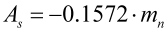
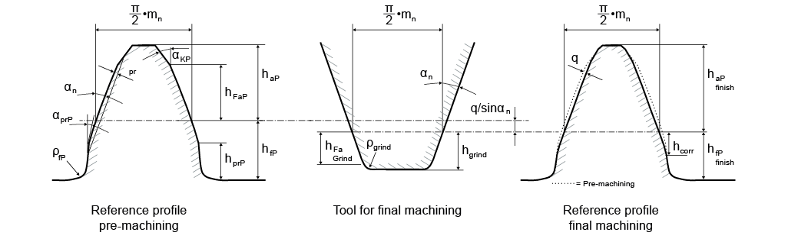
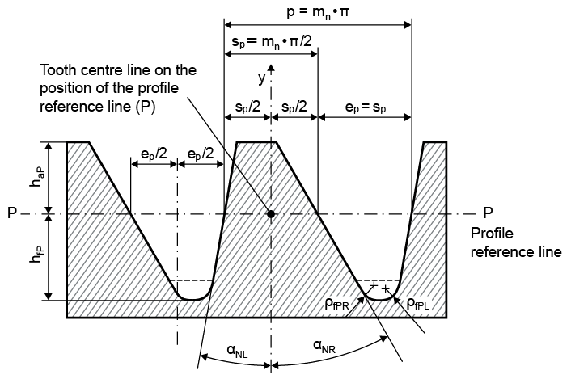
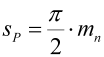

|
|
|


参考齿廓
此处显示的参考齿廓取自数据库。如果在此找不到合适的参考齿廓，必须先在数据库中录入（参见 数据库工具与外部表格 一章）（）。或者，从下拉列表中选择 ，打开一个对话框，在其中编辑所有输入字段，从而更改所有参考齿廓参数。 输入字段显示在 下拉列表下方。在此处输入自定义齿廓的名称，该名称随后会出现在计算报告中。
注意
在 字段中定义自己的齿廓时，不会在数据库中创建新条目。
参考齿廓的详细数据根据 ISO 53、DIN 867 或 DIN 58400 列出。这是齿轮的参考齿廓数据。将其乘以法向模数即可计算出以 [mm] 为单位的相应值。请注意以下几点：
-
如果参考齿廓设置为 ，则齿顶修形设为零（参见 修形 一章）。因此，从一个窗口切换到另一个窗口时，齿顶高可能会发生变化。
-
如果使用参考齿廓 来确定正确的齿顶圆直径和齿根圆直径，则必须直接输入适当的齿厚公差

。齿顶圆直径和齿根圆直径随后将与 BS 4582-1(8) 中定义的值一致。 -
齿面斜坡通常用于生成齿顶倒角（也称为“半切顶”）。或者，也可以使用较小的齿根挖根值来生成齿廓修形。不过，齿廓修形通常在 修形 窗口中定义（参见 修形 一章）。
-
如果齿面斜坡的角度与压力角仅略有不同，则不会在重合度中考虑它，因为齿廓修形的假设是重合度在载荷下不会减小。相比之下，对于倒角，应相应减小重合度。在设置（参见 计算 一章）中，可以指定用于齿廓修形和倒角的阈值角度差。
-
如果使用预加工刀具，则必须单独输入预加工的附加量。必须为预加工输入齿轮的参考齿廓。然后，最终加工的参考齿廓计算会考虑砂轮，并在报告中记录（参见 预加工与磨削余量 一章）。
-
对于角度差小于阈值（见上文）的齿廓修形，齿顶成形高度系数 h FaP* 在预加工和最终加工之间不会变化。

图 15.30：配置用参考齿廓：齿轮参考齿廓
非对称齿轮的参考齿廓：

图 15.31：配置用参考齿廓：非对称齿轮参考齿廓
-
单击“参考齿廓”下拉列表旁边的“尺寸计算”按钮，显示一个对话框，其中包含根据以下准则提出的参考齿廓建议：
-
两齿轮均取 (dNf-dFf) 最小值
-
两齿轮均取最小齿顶宽（优化 x 以适配滑动速度）
-
两齿轮均取最小齿顶宽（不改变 x）
-
根据“尺寸计算”选项卡中“模块特定设置”（）定义的理论齿廓重合度确定的深齿形
-
-
单击“参考齿廓”下拉列表旁边的“转换”按钮，显示一个对话框窗口，在其中可以选择齿轮，然后复制其参考齿廓属性。
-
haP* 始终作为法向齿轮参考齿廓适用。参考线上的齿厚定义为

(12.19)
Reference profile
The reference profiles displayed here are taken from the database. If you can't find a suitable reference profile here, you must first enter it in the database (see chapter Database Tool and External Tables) (). Alternatively, select from the drop-down list, to open a dialog in which you can edit all the input fields, and so change all the reference profile parameters. The input field is displayed under the drop-down list. This is where you enter the name of your own profile, which will then appear in the calculation report.
Note
You do not create a new entry in the database when you define your own profile in the field.
The reference profile details are listed according to ISO 53, DIN 867 or DIN 58400. This is the reference profile data for the gear. You can calculate the corresponding values in [mm] by multiplying it with the normal module. Please note the following points:
-
If the reference profile is set to , the tip alteration is set to zero (see chapter Modifications). For this reason, the addendum may change when you toggle from one window to another.
-
If you are using reference profile to determine the correct tip and root diameters, you must input an appropriate tooth thickness tolerance of
directly. The tip and root diameter will then match the values defined in BS 4582-1(8). -
The ramp flank is usually used to generate a tip chamfer (also called "semi-topping"). Alternatively, you can also use a small buckling root flank value to generate a profile modification. However, profile modifications are usually defined in the Modifications window (see chapter Modifications).
-
If the angle of the ramp flank is only slightly different from the pressure angle, it is not taken into account in the contact ratio because the assumption for profile modifications is that the contact ratio will not decrease under load. In contrast, the contact ratio should be reduced accordingly for a chamfer. In Settings (see chapter Calculations), you can specify the difference in angle that is to be used as the threshold in profile modifications and chamfers.
-
If a pre-machining tool is used, the additional measure for the pre-machining must be entered separately. You must input the gear's reference profile for the pre-machining. The calculation of the reference profile for final machining then takes the grinding wheel into account and documents this in the report (see chapter Pre-machining and grinding allowance).
-
For profile modifications, where the angle difference < threshold value (see above), the tip form height coefficient h FaP* does not change between pre-machining and final machining.
Figure 15.30: Reference profile for configuration: Reference profile gear
Reference profile for asymmetrical gears:
Figure 15.31: Reference profile for configuration: Reference profile for asymmetrical gears
-
Click the Sizing button next to the Reference profile drop-down list to display a dialog which contains proposals for reference profiles according to the following criteria:
-
Both gears with (dNf-dFf) minimum
-
Both gears at minimum topland (x is optimized to suit sliding velocity)
-
Both gears at minimum topland (do not change x)
-
Deep tooth form according to the theoretical profile contact ratio defined in the Sizing tab, in the "Module specific settings" ()
-
-
Click the Convert button next to the "Reference profile" drop-down list to display a dialog window in which you can select a gear, and then copy its reference profile properties.
-
haP* always applies as the normal gear reference profile. The tooth thickness on the reference line is defined as
(12.19)